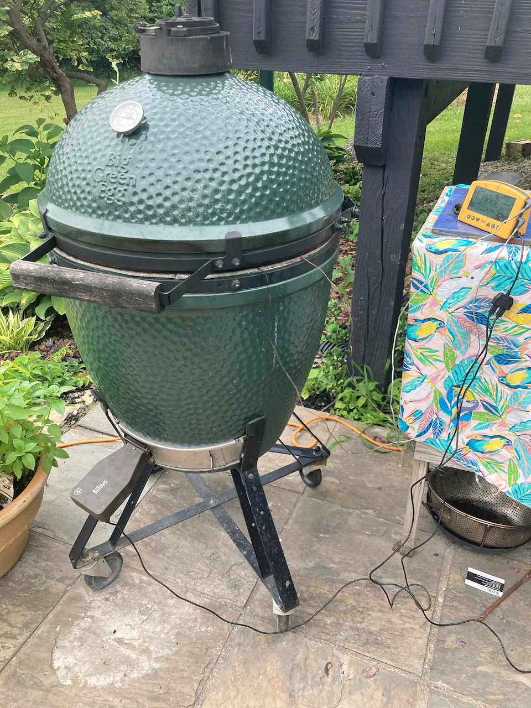
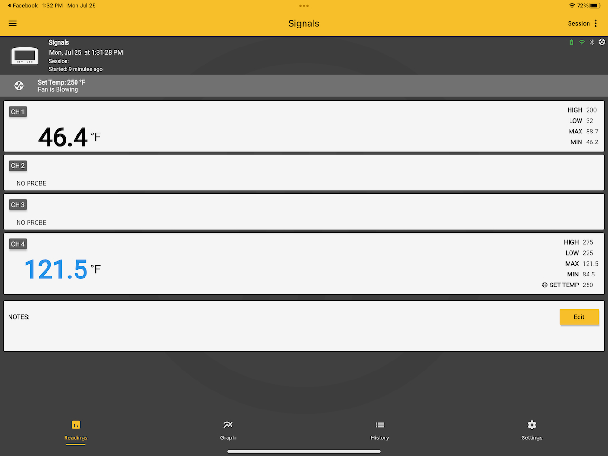
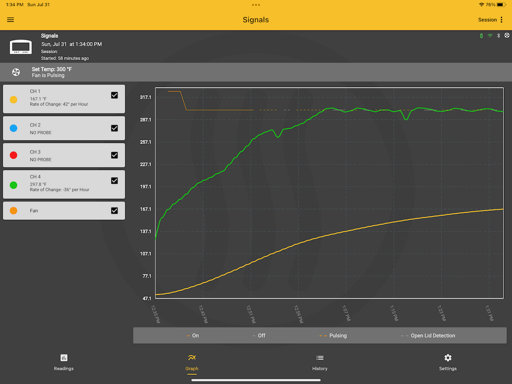
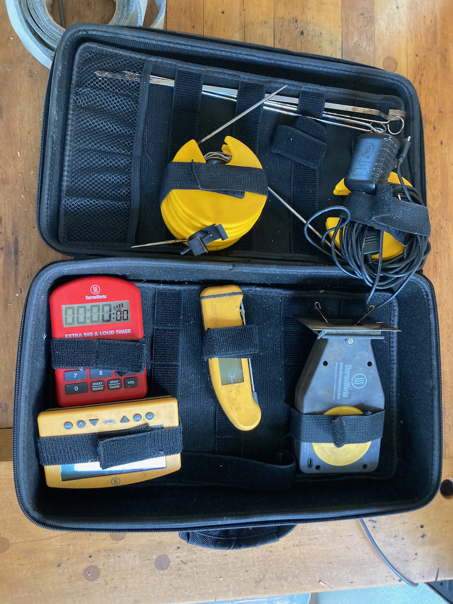

4.2 Accessories
4.2.1 The Basics
For grilling, it certainly is possible to use your new Big Green Egg “out of the box”, however a number of accessories, from the mundane to the sophisticated (and of course from cheap to expensive) help to greatly expand your grilling and barbecuing repertoire. Here are a few I find to be invaluable:
- An ash tool, something you should order when you purchase your Egg. It is absolutely necessary for removing ashes from the Egg through the lower vent.
- A garden trowel, which facilitates arranging the charcoal once it is in the egg.
- A ConvEGGctor. I hate the name, but it’s a great device if you want to use your egg more like an oven than a grill. I routinely use it with brisket and smoked pork, and also for bread, which I occasionally cook in the Egg.
There is, of course, a bunch of other stuff you will want to have, such as a grill brush, standard grilling tools, and some heavy duty oven mitts, but those are largely items of personal preference. I’ll now turn to the the critical issue of temperature control.
4.2.2 Temperature Control
One of the great advantages of the Big Green Egg is that, with a little practice, you can control the temperature when the lid is closed. The question is how. They come with a dome thermometer, but they are notoriously inaccurate. So what to use in its place?
There are two temperatures that really matter, especially when barbecuing. The first is the grill temperature; the second is the internal temperature of what you are cooking. And because you don’t want to be opening and closing the lid any more than necessary, it is valuable to have a remote monitoring system for both.
For all matters of temperature and time, I am a big fan of Thermoworks. Not only do they make high quality devices, but their website is an excellent source of recipes, ones we will be referring to frequently. If you sign up for their newsletter, you will receive only one email a day. Some of them are purely promotional, but others contain links to recipes you may want to explore. These are their devices I’ve used over the past decade or so, ranging from the most basic to the most elaborate.
- The ChefAlarm Thermometer and Timer was my first device, and it is very useful for indoor cooking. It will monitor a single temperature and has both time monitoring and high and low temperature alarms. It comes with a single probe for monitoring internal temperatures, meaning that it can’t be used to monitor both internal and grill temperatures. In addition, it does not have remote monitoring (Bluetooth or WiFi) capabilities.
- So, if you want to go further, there are two items to start with. The first is a standalone timer. While Thermoworks is in the business of selling temperature controlled devices, it also offers an excellent selection of time monitoring devices. My personal favorite is the Extra Big and Loud Timer - it is very simple and straightforward to use. Of course all kinds of timers can be had at grocery stores, kitchen stores, etc., so if you already have one of those (or wish to save money by buying one) that is a perfectly fine option.
- The second is an instant read thermometer, a step up in the sophistication scale. If you have an internal monitoring device, it only reads the temperature in one spot; other spots in the item cooking may be hotter or cooler. The best device on the market right now is the Thermopen One, which has a one second response time. The Classic Thermopen is also a fine option, having a response time of 2-3 seconds, and which is about $20 less expensive.
- Now we get into the heavy duty stuff - multiple channel devices with remote monitoring capabilities. I’ve already addressed why multiple channel monitoring is important (for both grill and internal monitoring); we sometimes can use one or two additional channels (such as grilling or barbecuing poultry, where keeping track of both thigh and breast temperatures are important). Thermoworks has two options to be considered. The first is the Smoke series of devices. The most inexpensive ($99 at time of writing) has two channels and basic blutetooth capabilities, and comes with one internal and one grill temperature probe. Moving up in sophistication (and price) are the Smoke X2 and Smoke X4, both of which use longer distance RF transmission and have 2 and 4 channels respectively. But the absolute best (and what I use exclusively) is the Signals bluetooth and wifi device. It can be controlled by a reasonably functional smart phone app, and with it connected to your WiFi network, you can actually monitor temperatures from anywhere in the world. That may seem silly, but when you’re doing a 16 hour barbecue of a brisket or a pork butt, that may prove to be useful - you will not be tied to your home for the duration. Indeed, when you use a temperature control device (see below) you can actually make adjustments to the cooking temperature from afar.
- Of course, probes are an essential part of any temperature monitoring system. All of the above devices come with an adequate selection of probes, but there are a large number of different ones available. One I use a lot is a High Temperature Needle Probe, which is shorter, making it ideal for monitoring small or thin items like chicken wings or fish. Also, although I was skeptical at first, I have found Probe Spools to be an incredible convenience. They all but eliminate tangling and kinking, things that can greatly reduce probe lifetimes.
- So far we’ve dealt with temperature monitoring, but what about Temperature Control? We are now at the ultimate high end of sophistication. The device for doing so is the Billows Temperature Control Fan, a fan that attaches to the lower vent of a barbecue device and, in combination with a Smoke or a Signals device, does its best to control the chamber temperature. I always use it for low temperature cooking, and if I do so carefully, it is a godsend. BUT, two caveats:
- It requires electricity. I am fortunate enough to have an outdoor plug near my outdoor cooking area, but if you don’t, you’ll have to either rig up extension cords from the nearest outlet or spring for a 12 Volt Battery Pack, which actually costs more than the device itself ($99 vs. $79).
- It is really good for bring your grill up to temperature, but it is largely ineffective in bringing it down. Thus, if you’re doing a low temperature cook, it is critical that you get it attached, set, and running well before the chamber has reached your desired temperature.
- It requires electricity. I am fortunate enough to have an outdoor plug near my outdoor cooking area, but if you don’t, you’ll have to either rig up extension cords from the nearest outlet or spring for a 12 Volt Battery Pack, which actually costs more than the device itself ($99 vs. $79).
- Finally, how to store all this mess? While it’s not, in my opinion, Thermoworks’ finest product, their Extra Large Zippered Storage Case will hold all of my devices (which, just to review, are a Big and Loud Timer, a Thermopen, a Signals monitoring unit, a Billows control unit, and four probes on spools). I’ve also managed to add some metal skewers that I use on occasion.

Big Green Egg with Billows and Signals attached.
 
Screen shots of Thermoworks app display. Left: Readings screen, showing internal temperature (top) and grill temperature (bottom) at the beginning of a run. Right: Graph screen after one hour of cooking a tritip roast. Grill temperature is in green and internal temperature is in gold.

My temperature monitoring and control kit. Clockwise from top: Skewers, wiring for Billows, Billows device, Thermopen, Signals controller, Big and Loud timer.